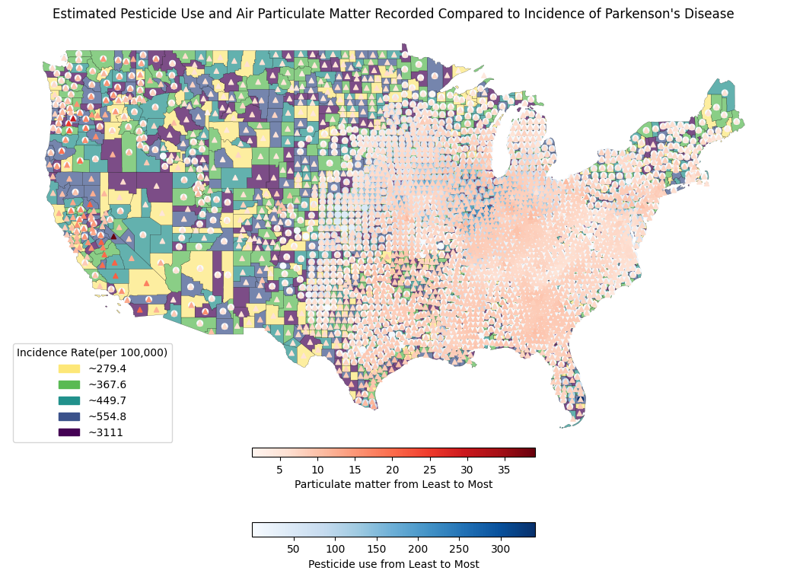

Exploring environmental exposures associated with Parkinson’s disease.
This visualization compares estimated pesticide usage and levels of fine particulate matter (PM2.5) with Parkinson’s disease incidence across U.S. counties. The color gradients highlight regions where environmental stressors may align with higher disease rates, helping identify areas where environmental conditions may contribute to increased risk.
